Глава 08
Эталоны
Как единицу величины воспроизводят, сохраняют и передают средствам измерений. Виды эталонов, стандартные образцы и эталонная база России.
Воспроизведение, хранение и передача единицы
Эталон (единицы величины или шкалы измерений) – это средство измерительной техники, предназначенное для воспроизведения, хранения и передачи единицы величины или шкалы измерений.
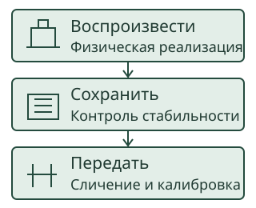
Метрологические характеристики эталона аналогичны метрологическим характеристикам средств измерений (например, характеристики точности и стабильности).
Воспроизведение единицы (величины) – это совокупность операций по материализации единицы величины с помощью первичного эталона.
Рассматривает три процедуры воспроизведения единицы величины:
первая состоит в физической реализации единицы измерения в соответствии с ее определением (воспроизведение в буквальном смысле).
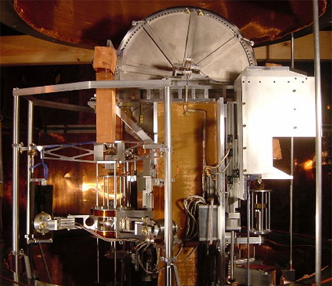
Весы Киббла связывают массу с электрическими измерениями и постоянной Планка h; это один из способов реализации килограмма. вторая процедура состоит в использовании высокостабильного эталона, основанного на физическом явлении.
Пример, в случае использования стабилизированных по частоте лазеров при воспроизведении метра, эффекта Джозефсона для вольта, квантового эффекта Холла для ома.
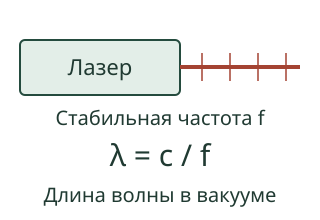
У стабилизированного лазера частота f связывается с длиной волны в вакууме: λ = c/f. Её используют при реализации единицы длины. 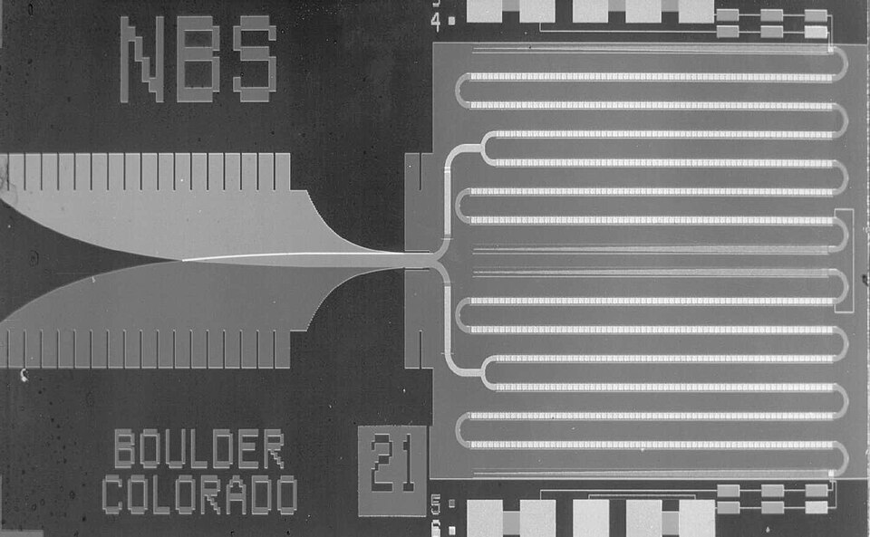
Массив переходов — часть квантового эталона напряжения. Эффект Джозефсона связывает напряжение с частотой и фундаментальными постоянными. 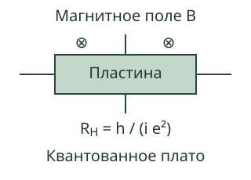
На квантованном плато R_H = h/(i·e²), где i — положительное целое число (номер плато). Для реализации единицы сопротивления нужны специальные условия и измерительная установка. Третья процедура состоит в использовании материальной меры как эталона с приписанным значением величины и установленным показателем точности. Например, рабочий эталон массы может включать набор гирь. При этом материальная мера не заменяет действующего определения килограмма через фиксированное значение постоянной Планка.
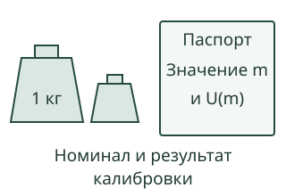
Номинал гири обозначает её назначение; приписанное значение массы устанавливают при калибровке и указывают вместе с неопределённостью U(m).
Воспроизведение основной единицы – это воспроизведение единицы путем создания фиксированной по размеру величины в соответствии с определением единицы.
Воспроизведение производной единицы – это воспроизведение единицы величины в соответствии с уравнением связи между данной производной единицей и основными единицами.
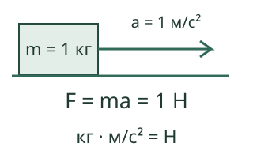
Хранение единицы – это совокупность операций, обеспечивающих неизменность во времени размера единицы, воспроизводимой, хранимой и передаваемой данным эталоном.
Хранение единицы осуществляется при соблюдении обязательных технических требований и требований к содержанию и применению эталона.
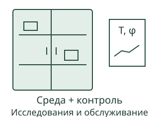
Передача единицы величины – это приведение размера величины, хранимой средством измерений, к единице величины, воспроизводимой или хранимой эталоном данной единицы величины или стандартным образцом.
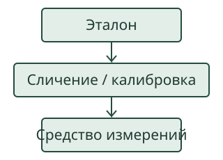
Передача шкалы (измерений) (величины) – это совокупность операций, имеющих целью воссоздание шкалы измерений (или ее участка) в соответствии с ее спецификацией.
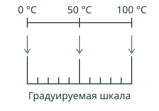
Хранение эталона; содержание эталона – это совокупность операций, необходимых для обеспечения выполнения обязательных метрологических и технических требований к эталонам, а также требований к их содержанию и применению.
Хранение эталона включает его регулярные исследования, в том числе сличения с национальными эталонами других стран, калибровку или поверку с целью подтверждения выполнения обязательных требований к метрологическим характеристикам и совершенствования методов передачи единицы или шкалы измерений.
Для руководства работами по содержанию эталонов устанавливают специальную категорию должностных лиц – ученых хранителей государственных эталонов, назначаемых из числа ведущих в данной области специалистов-метрологов.
Естественные эталоны
Естественный эталон – это эталон, основанный на присущих и воспроизводимых свойствах материального объекта или явления.
Значение величины естественного эталона приписывается по соглашению и не требует установления связи с другими эталонами того же вида. Показатели точности определяются с учетом двух составляющих: первая связана с согласованным значением величины, вторая связана с конструкцией, исполнением
и хранением эталона.
Естественные эталоны, которые основаны на квантовых явлениях, обычно имеют наивысшую стабильность.
Прилагательное «естественный» не означает, что такой эталон может быть создан и использован без специального обслуживания или что такой эталон невосприимчив к внутренним и внешним влияниям.
Примеры:
- ячейка тройной точки воды как естественный эталон термодинамической температуры;
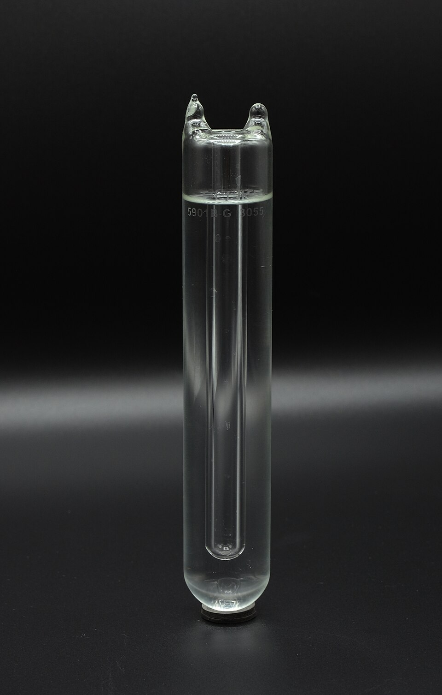
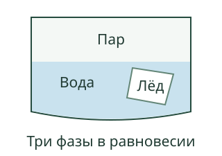
Ячейка тройной точки воды: при работе в ней сосуществуют лёд, вода и пар в равновесии. В МТШ-90 этой точке приписано 273,16 K; определение кельвина основано на постоянной Больцмана. - естественный эталон разности электрических потенциалов, основанный на эффекте Джозефсона; Массив переходов Джозефсона — пример выше.
- естественный эталон электрического сопротивления, основанный на квантовом эффекте Холла; Схема квантового эффекта Холла — выше.
Перспективное направление квантовой метрологии — оптические стандарты частоты, применяемые в высокоточных атомных часах. Их развитие создаёт предпосылки для будущего изменения определения секунды. По международной дорожной карте решение может рассматриваться на Генеральной конференции по мерам и весам в 2030 году при выполнении установленных критериев. До принятия и введения нового определения действует определение секунды через частоту сверхтонкого перехода основного состояния атома цезия-133; именно оно закреплено и в действующем российском Положении о единицах величин.

Камера с атомами стронция — часть оптических часов JILA. Оптические стандарты развивают измерения частоты; действующее определение секунды остаётся цезиевым. образец меди как естественный эталон электропроводности.
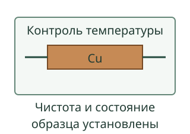
Эталонные свойства образца меди требуют установленной чистоты, состояния и температуры; произвольный кусок меди эталоном электропроводности не является.
Классификация эталонов
Виды эталонов
Первичный эталон – это эталон, основанный на использовании первичной референтной методики измерений или созданный как артефакт, выбранный по соглашению.
Первичный эталон обеспечивает воспроизведение единицы или шкалы измерений с наивысшей точностью.
Метрологические свойства первичных эталонов единиц величин устанавливают независимо от других эталонов единиц этих же величин.

NIST-F2 — исторический пример первичной реализации секунды с использованием цезиевого фонтана. Для первичного эталона, воспроизводящего единицу в специфических условиях (высокие и сверхвысокие частоты, малые и большие энергии, давления, температуры, особые состояния вещества) используют термин первичный специальный эталон.
Вторичный эталон – это эталон, получающий единицу величины или шкалу измерений непосредственно от первичного эталона данной единицы или шкалы.
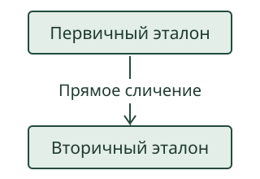
Признак вторичного эталона — непосредственное получение единицы от первичного эталона. Эталон сравнения – это эталон, применяемый для сличений эталонов, которые по тем или иным причинам не могут быть непосредственно сличены друг с другом.
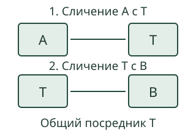
Эталон сравнения T служит общим посредником в двух последовательных сличениях; A и B непосредственно не сравнивают. Рабочий эталон – это эталон, предназначенный для передачи единицы величины или шкалы измерений средствам измерений.
При необходимости рабочие эталоны подразделяют на разряды (1-й, 2-й, ..., n-й). В этом случае передачу единицы осуществляют через цепочку соподчиненных по разрядам рабочих эталонов. При этом от последнего рабочего эталона в этой цепочке единицу передают средству измерений.
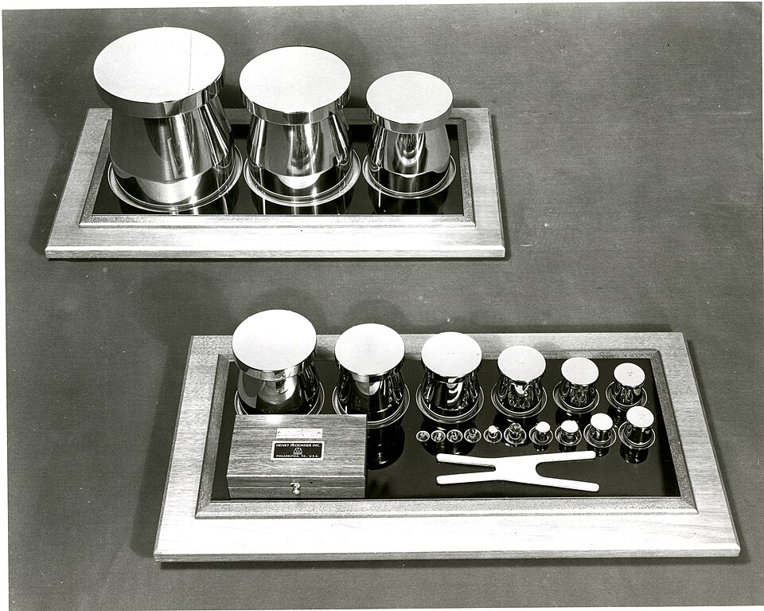
Набор гирь может выполнять роль рабочего эталона и передавать единицу массы весам. Роль и разряд устанавливают по документам, а не по внешнему виду гирь. Калибратор – это эталон, используемый при калибровке или поверке.
Термин калибратор используется только в определенных областях.
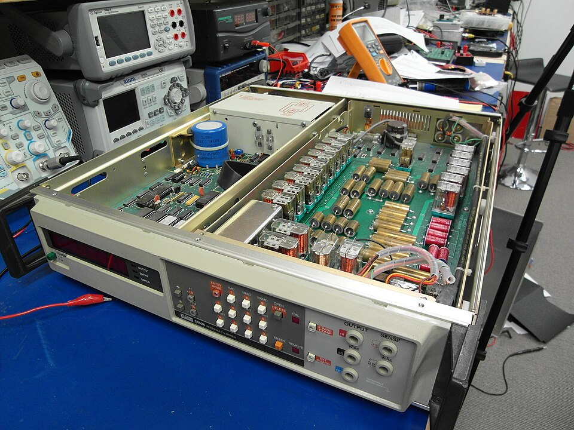
Калибратор сопротивления задаёт значение R для поверки или калибровки измерительного прибора. Транспортируемый эталон – это эталон (иногда специальной конструкции), предназначенный для его транспортирования к местам поверки (калибровки) средств измерений или сличений эталонов.
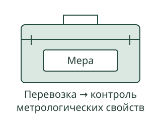
Транспортируемый эталон защищают при перевозке и контролируют после неё. Переносное исполнение прибора само по себе не делает его эталоном. Исходный эталон – это эталон, обладающий наивысшими метрологическими свойствами (в стране или группе стран, в регионе, министерстве (ведомстве), организации, предприятии или лаборатории), передающий единицу величины или шкалу измерений подчиненным эталонам и имеющимся средствам измерений.
Эталоны, стоящие в поверочной схеме (калибровочной иерархии) ниже исходного эталона, обычно называют подчиненными эталонами.
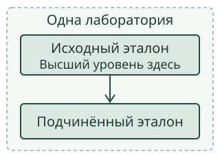
Исходный эталон занимает высший уровень в данной лаборатории; это не означает, что он является первичным эталоном. Национальный эталон – это эталон, признанный национальными органами власти для использования в государстве или экономике в качестве исходного для страны.
В некоторых странах СНГ в качестве национального эталона используют вторичный или рабочий эталон.
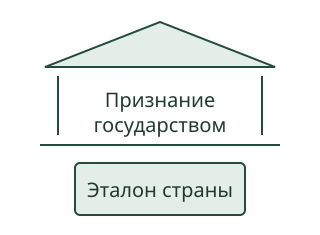
Национальный статус задаётся официальным признанием. Эталон может содержаться в национальном метрологическом институте; само место хранения статус не устанавливает. Международный эталон – это эталон, который признан всеми государствами, подписавшими международное соглашение, и предназначен для всего мира.
Международный прототип килограмма — исторический пример международного эталона. С 20 мая 2019 года он не определяет килограмм: единица связана с фиксированным значением h.
Стандартные образцы
Стандартный образец – это материал, достаточно однородный и стабильный в отношении определенных свойств для того, чтобы использовать его при измерении или при оценивании качественных свойств в соответствии с предполагаемым назначением.

Оценивание качественного свойства дает значение этого качественного свойства и соответствующую неопределенность. Эта неопределенность не является неопределенностью измерений.
Стандартные образцы с приписанными значениями величины или без них могут использоваться для контроля прецизионности измерений, тогда как для калибровки или контроля правильности измерений могут использоваться только стандартные образцы с приписанными значениями величины.
Некоторые стандартные образцы могут иметь приписанные значения величины, которые являются метрологически прослеживаемыми к внесистемной единице измерения. К таким образцам относятся вакцины, которым Всемирной организацией здравоохранения приписываются Международные Единицы (ME).
Один и тот же стандартный образец не может использоваться и для калибровки, и для контроля точности результатов измерений применительно к одной и той же измерительной системе.
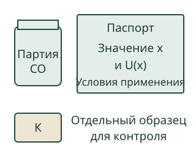
Требования к эталонам единиц
Государственный первичный эталон единицы величины – государственный эталон единицы величины, обеспечивающий воспроизведение, хранение
и передачу единицы величины с наивысшей в Российской Федерации точностью, утверждаемый в этом качестве в установленном порядке и применяемый в качестве исходного на территории Российской Федерации.
Государственные эталоны единиц величин образуют эталонную базу Российской Федерации.
Государственный эталон может быть комплексом установок, средств измерений и обеспечивающих устройств. Фотографии зарубежных установок в этой главе иллюстрируют физические принципы и не обозначают российские государственные эталоны.
Требования к государственным эталонам
Государственные первичные эталоны единиц величин не подлежат приватизации.
Сведения о государственных эталонах единиц величин вносятся федеральным органом исполнительной власти, осуществляющим функции по оказанию государственных услуг и управлению государственным имуществом в области обеспечения единства измерений, в Федеральный информационный фонд по обеспечению единства измерений.
Государственные первичные эталоны единиц величин содержатся и применяются в государственных научных метрологических институтах.
Государственные первичные эталоны единиц величин подлежат утверждению федеральным органом исполнительной власти, осуществляющим функции по оказанию государственных услуг и управлению государственным имуществом в области обеспечения единства измерений.
Государственные первичные эталоны единиц величин подлежат сличению
с эталонами единиц величин Международного бюро мер и весов и национальными эталонами единиц величин иностранных государств. Ответственность за своевременное представление государственного первичного эталона единицы величины на сличение несет государственный научный метрологический институт, содержащий данный государственный первичный эталон единицы величины.В Российской Федерации должны применяться эталоны единиц величин, прослеживаемые к государственным первичным эталонам соответствующих единиц величин. В случае отсутствия соответствующих государственных первичных эталонов единиц величин должна быть обеспечена прослеживаемость средств измерений, применяемых в сфере государственного регулирования обеспечения единства измерений, к национальным эталонам единиц величин иностранных государств.
Конструкция эталонов единиц величин должна обеспечивать ограничение доступа к определенным частям эталонов единиц величин (включая программное обеспечение) в целях предотвращения несанкционированной настройки
и вмешательства, которые могут привести к искажению воспроизведения, хранения и передачи единицы величины, шкалы величины (шкалы измерений).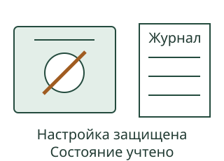
Ограничение доступа к настройкам сочетают с учётом состояния, обслуживания и результатов исследований.
Порядок утверждения, содержания, сличения и применения государственных первичных эталонов единиц величин, порядок передачи единиц величин от государственных эталонов, порядок установления обязательных требований
к эталонам единиц величин, используемым для обеспечения единства измерений в сфере государственного регулирования обеспечения единства измерений, порядок оценки соответствия этим требованиям, а также порядок их применения устанавливается Правительством Российской Федерации.
Совокупность государственных эталонов единиц величин образует эталонную базу Российской Федерации. Её состав развивается по мере создания, совершенствования и утверждения эталонов. Актуальные сведения о государственных первичных эталонах следует устанавливать по Федеральному информационному фонду по обеспечению единства измерений и материалам Росстандарта с указанием даты обращения.
Эталонная база и метрологическая служба
метрологические институты
центры метрологии
Учебная схема показывает историческую структуру Государственной метрологической службы: состав организаций и их подчинение.
Государственные первичные эталоны единиц величин относятся к федеральной собственности и не подлежат приватизации. Их содержание и применение осуществляются в соответствии с Федеральным законом от 26 июня 2008 г. № 102-ФЗ «Об обеспечении единства измерений». Федеральное агентство по техническому регулированию и метрологии имеет сокращённое наименование Росстандарт.
Государственные научные метрологические институты разрабатывают, совершенствуют, содержат и применяют государственные первичные эталоны, передают единицы величин и выполняют научно-методические работы. Организацию их деятельности следует рассматривать с учётом Положения о Государственной метрологической службе, утверждённого постановлением Правительства РФ от 20 сентября 2025 г. № 1453 и действующего с 1 января 2026 г. Руководство деятельностью Государственной метрологической службы осуществляет Росстандарт.
Фотографии и лицензии
Фотографии уменьшены без кадрирования.
- Весы Киббла (Описание по-русски) — Richard Steiner; CC BY-SA 3.0 (Лицензия по-русски).
- Массив переходов Джозефсона (Описание по-русски) — NBS; Общественное достояние (Public domain).
- Ячейка тройной точки воды (Описание по-русски) — Marián Hubinský; CC BY-SA 4.0 (Лицензия по-русски).
- Оптический стандарт частоты (Описание по-русски) — The Ye group and Brad Baxley, JILA; Общественное достояние (Public domain).
- Цезиевый фонтан NIST-F2 (Описание по-русски) — National Institute of Standards and Technology - Physics Laboratory: Time and Frequency Division; Общественное достояние (Public domain).
- Стандартный образец состава NIST SRM 2387 (Описание по-русски) — NOAA - NIST; Общественное достояние (Public domain).
- Материальные меры массы (Описание по-русски) — National Institute of Standards and Technology; Общественное достояние (Public domain).
- Калибратор сопротивления (Описание по-русски) — Dave Jones from Australia; CC BY 2.0 (Лицензия по-русски).


.jpg){kind=link}